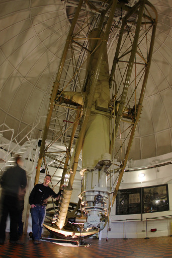
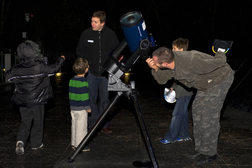
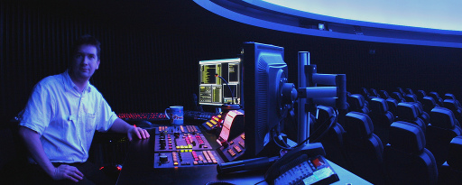

During my PhD, I started presenting talks about my research around the UK, for astronomy groups and specialist meetings, such as the British Astronomical Associations' Variable Star Section.
What had been a sideline turned into a full time job upon arrival at the Royal Observatory, Greenwich in 2007. At the ROG, I developed and presented planetarium shows (using the Digistar3 system) to ~30,000 people per annum, developed and ran evening courses in astrophotography, and delivered observing evenings with the historical telescopes. During my time there, I also initiated the hugely successful Astronomy Photographer of the Year competition.
|

The historical 28" refractor at the
Royal Observatory, Greenwich.
|

Telescopes at the Royal Observatory,
Greenwich.

At the controls of the E&S Digistar3 system at the 120-seater Planetarium
at the Royal Observatory, Greenwich.
|